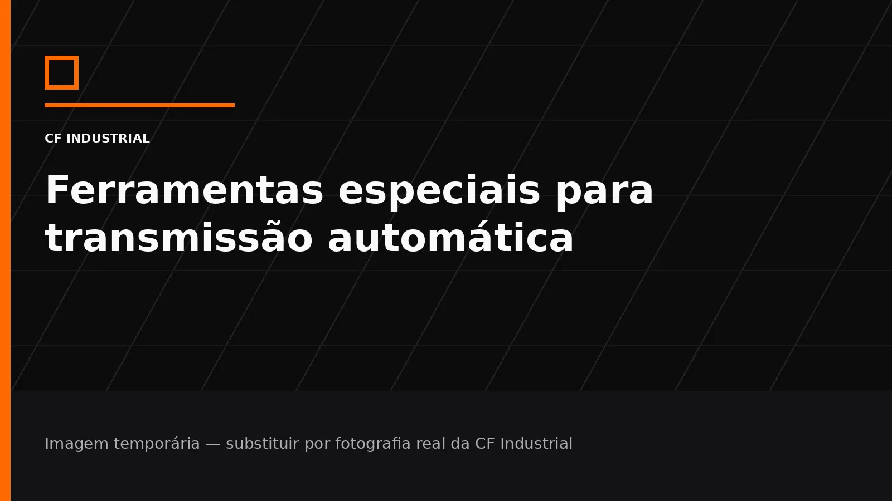

Ferramentas especiais para transmissão automática
Desenvolvimento e fabricação de ferramentas e dispositivos destinados a operações específicas de manutenção, desmontagem, montagem, inspeção e reparo.
Ferramentas e soluções pensadas para a rotina de reparo.
Essa área do site é dedicada a mecânicos, oficinas especializadas, empresas de transmissão automática, reparadores e centros automotivos que precisam de ferramentas, dispositivos, máquinas, peças e serviços específicos.
A CF Industrial pode utilizar diferentes capacidades de fabricação para desenvolver soluções conforme a aplicação.

Como essa solução se conecta à manutenção.
Aplicação profissional
Soluções voltadas a oficinas especializadas, reparadores e centros automotivos que trabalham com transmissão automática.
Desenvolvimento sob medida
Quando necessário, a CF Industrial pode avaliar necessidades específicas e combinar fabricação, usinagem, corte e desenvolvimento.
Orçamento técnico
Envie fotos, modelo da transmissão, medidas, aplicação e o problema que precisa ser resolvido.
Precisa de uma ferramenta que não encontra pronta?
Envie a aplicação, fotos, dimensões, modelo da transmissão e explique como a ferramenta ou dispositivo precisa funcionar. A análise pode começar pela necessidade, mesmo sem um desenho final.
Informações úteis
- Modelo da transmissão
- Operação a executar
- Fotos ou vídeos da aplicação
- Medidas disponíveis
- Quantidade desejada
Uma necessidade específica para câmbio automático?
Envie a aplicação e as referências disponíveis para avaliação técnica e orçamento.